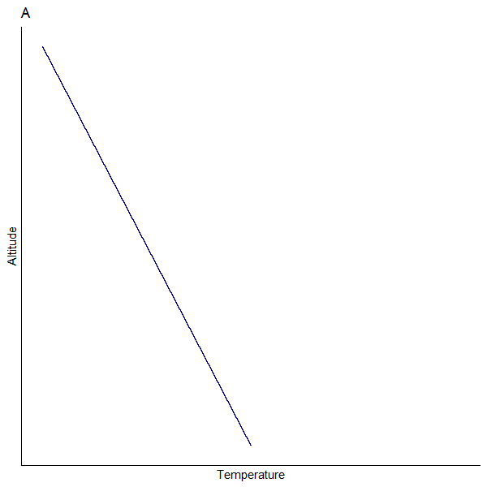

Climate Feedbacks
EES 3310/5310
Global Climate Change
Jonathan Gilligan
Class #8: Wednesday, February 10 2021
Which lapse rate is greater?
|
 |
|

Lapse Rates

Greenhouse effect

- Ground temp: \(T_{\text{ground}} = T_{\text{skin}} + h_{\text{skin}} \times \text{env. lapse}\)
Global warming

- Greater CO2\(\rightarrow\) greater skin height.
- Warming: \(\Delta T_{\text{ground}} = \Delta h_{\text{skin}} \times \text{env. lapse}\)
- What does rising temperature do to water vapor?
Water Vapor Feedback

- Rising temperature \(\rightarrow\) greater humidity
- Greater humidity \(\rightarrow\) skin height rises even higher
- \(\Delta T_{\text{ground}} = \Delta h_{\text{skin}} \times \text{Lapse}\)
Around the planet

Cloud blocks sunlight

Exercise 3-3

Temperature drops

Volcanoes and Temperature

Testing Theory of Water-Vapor Feedback

- Pinatubo erupts
- Model calculations with water vapor feedback correctly predict cooling
- Turn off water vapor feedback: incorrect predictions
Additional Tests

Andrew Ingersoll & Runaway Greenhouse
1967: First class he ever taught
- Assigned homework:
- Calculate water vapor feedback
- Students couldn’t solve problem
- Fixed problem so students could solve it
- It worked for Earth, but not Venus
- Hmmmm …
- It would work for Venus if all the oceans boiled dry.

Andrew Ingersoll & Runaway Greenhouse
Wrote up results for publication
- Rejected by journal
- Submitted to another journal
- Rejected again
- Submitted to a third journal
- Accepted
- Now a classic paper
- Cited more than 200 times
Kombayashi-Ingersoll Limit
- \(S\) = Incoming sunlight
- Outgoing long-wave has to balance incoming sunlight \(S\)
- Curves = relationship between temperature and outgoing radiation
- no feedback, feedback, feedback + high CO2
- Brighter sun \(\rightarrow\) hotter \(\rightarrow\) more water vapor
- Water vapor absorbs outgoing radiation
- Absorption \(\rightarrow\) hotter \(\rightarrow\) more vapor
- Kombayashi-Ingersoll limit:
- Sunlight below limit, there is a stable equilibrium with liquid water
- Sunlight above limit, oceans boil dry

Cloud Feedbacks

Satellite Measurements
Radiative forcing by clouds

(negative = cooling, positive = warming)
Indirect Aerosol Effect
- Aerosol particles \(\rightarrow\) more, smaller droplets
- Smaller droplets \(\rightarrow\) greater albedo, longer lifetime
- More droplets \(\rightarrow\) greater albedo, more absorption

Indirect Aerosol Effect